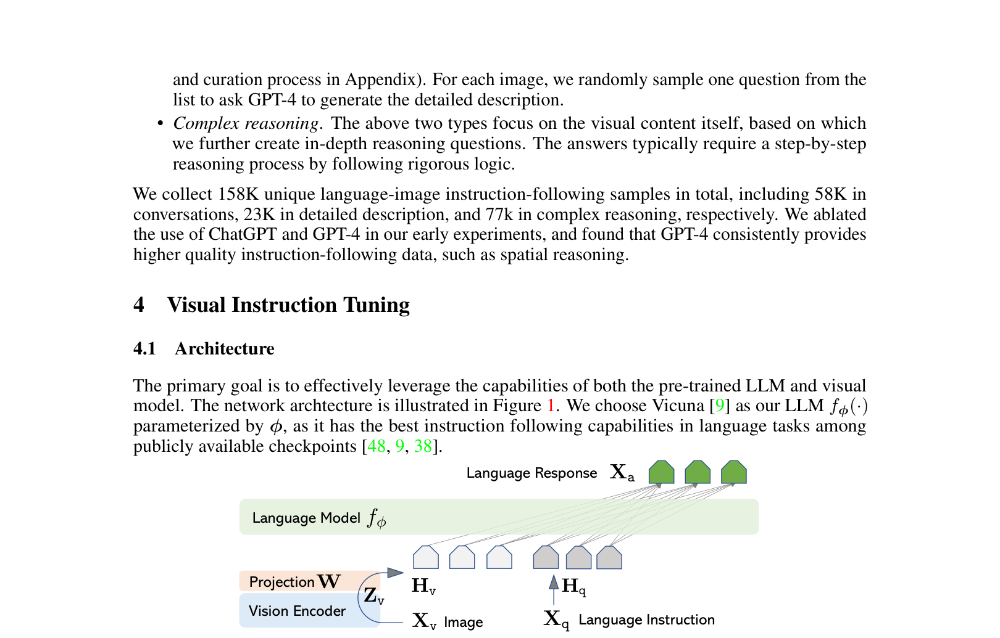
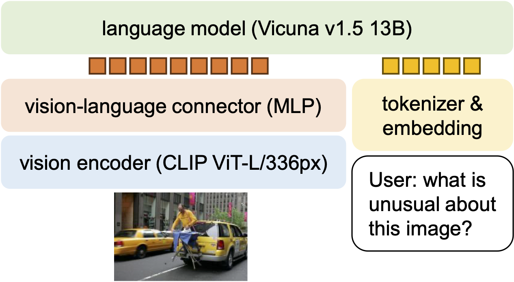
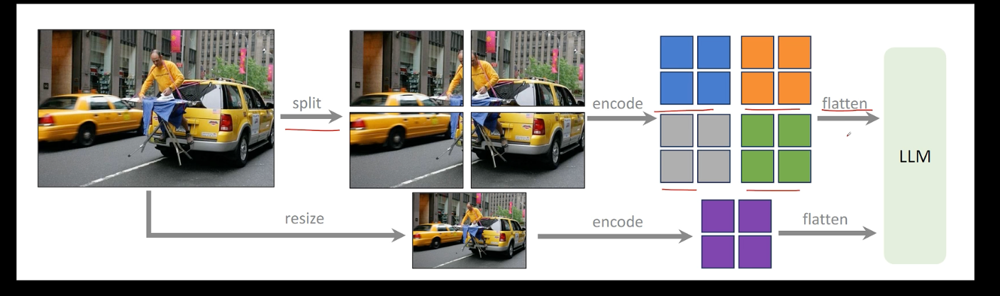
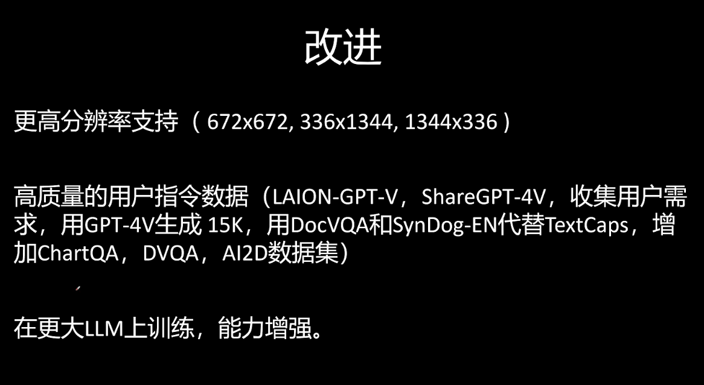
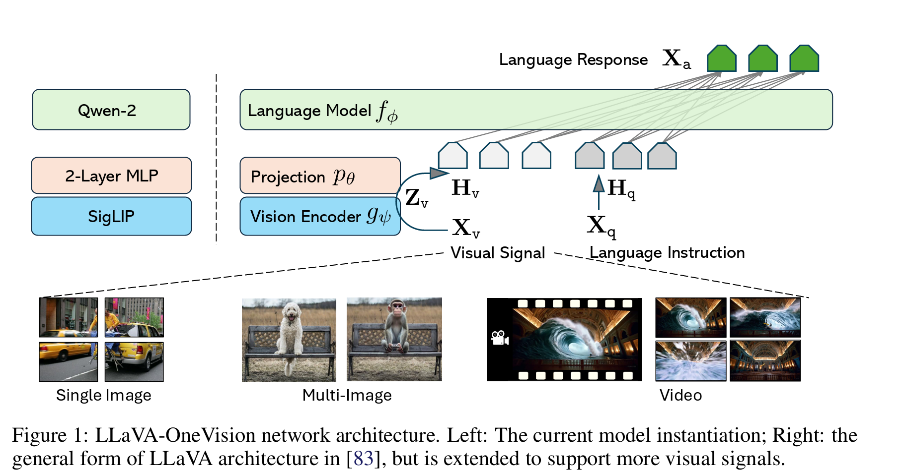

LLaVA: Visual Instruction Tuning¶
📄 论文链接：arXiv:2304.08485 | PDF
作者：Haotian Liu (UW-Madison), Chunyuan Li (Microsoft Research), Qingyang Wu (Columbia), Yong Jae Lee (UW-Madison)
发表：NeurIPS 2023
LLaVA 系列速览¶
| 维度 | LLaVA | LLaVA-1.5 | LLaVA-1.6 / NeXT |
|---|---|---|---|
| 时间 | 2023 (NeurIPS) | 2023 | 2024.01 |
| 视觉编码器 | CLIP ViT-L/14 | CLIP-ViT-L-336px | CLIP-ViT-L-336px |
| 连接器 | 线性投影 | 2 层 MLP | 2 层 MLP |
| LLM | Vicuna | Vicuna-7B/13B | Vicuna / Mistral-7B / Yi-34B |
| 分辨率 | 224×224 | 336×336 | AnyRes，最高 672×672 |
| 核心改进 | 视觉指令微调 + GPT-4 生成数据 | MLP 连接器 + 学术 VQA 数据 | AnyRes 动态分辨率 + 文档/图表/OCR 数据 |
| 训练数据 | 595K + 158K 指令 | ~120 万公开数据 | ~130 万 |
目录¶
- 核心要点
- 1. LLaVA
- 1.1 背景
- 1.2 方法
- 1.3 总结
- 2. LLaVA-1.5
- 2.1 背景
- 2.2 方法
- 2.3 高分辨率
- 2.4 组合能力
- 2.5 幻觉
- 2.6 总结
- 3. LLaVA-1.6 / LLaVA-NeXT
- 3.1 AnyRes
- 3.2 对比
- 3.3 数据
- 4. LLaVA-OneVision
- 4.1 架构
- 4.2 Higher AnyRes
- 4.3 视觉表示
- 4.4 课程学习
- 4.5 数据
- 4.6 涌现能力
- 5. LLaVA-Video
- 5.1 思路
- 5.2 架构
- 5.3 数据集
- 5.4 SlowFast
- 5.5 训练
- 5.6 发现
核心要点¶
- 首创视觉指令微调：将指令微调（instruction tuning）从纯文本扩展到图文多模态领域，用 GPT-4 生成的 158K 视觉-语言指令数据训练出一个能遵循多模态指令的通用视觉助手。
- 架构极简有效：仅用一个线性投影层连接 CLIP 视觉编码器和 Vicuna 语言模型，证明简单架构 + 高质量数据就能实现强性能，复杂结构（如 Q-Former、Gated Cross-Attention）并非必要。
- GPT-4 生成训练数据：用纯文本 GPT-4 通过"符号化图像表示"（caption + bounding box）生成多模态指令数据，GPT-4 从未看到真实图像却能产出高质量的视觉问答、描述、推理数据。
- 涌现能力：仅用约 8 万张图像训练，模型展现出 OCR、代码生成、meme 理解、知识关联等训练数据中未覆盖的能力。
- ScienceQA 新 SOTA：LLaVA + GPT-4 集成达到当时最优准确率，超越此前所有方法。

Figure 1: LLaVA 网络架构（CLIP 视觉编码器 + 线性投影层 + Vicuna LLM）1. LLaVA¶
1.1 背景¶
指令微调¶
指令微调（instruction tuning）在纯文本大语言模型中取得了巨大成功（ChatGPT、Alpaca、Vicuna），使模型能够遵循人类意图完成各种任务。但在多模态（视觉-语言）领域，指令微调尚未被系统探索。
定义¶
核心思想：用"指令-回答"格式的数据来微调大语言模型，让模型学会理解人类意图并遵循指令完成任务。
与传统微调的区别：
传统微调（Task-specific Fine-tuning）：
每个任务训练一个专门的模型
- 情感分类模型：输入"这部电影很好看" → 输出"正面"
- 翻译模型：输入"hello" → 输出"你好"
- 问答模型：输入问题 → 输出答案
问题：换个任务就要重新训练
指令微调（Instruction Tuning）：
一个模型处理所有任务，靠指令区分
- 输入："请判断以下句子的情感：这部电影很好看" → 输出："正面"
- 输入："请将以下内容翻译成中文：hello" → 输出："你好"
- 输入："请回答以下问题：地球是什么形状？" → 输出："球形"
优势：同一个模型，换个指令就能做不同的事
训练数据格式：
每条数据都是一个 (指令, 输入, 输出) 三元组：
{
"instruction": "请描述这张图片中的内容",
"input": "<image>",
"output": "这是一张海滩照片，有一个人坐在沙滩椅上..."
}
{
"instruction": "这张图片里有几只猫？",
"input": "<image>",
"output": "图片中有 3 只猫"
}
模型通过这些数据学会：看到不同的指令 → 执行对应的任务。
一句话总结：指令微调 = 教模型"听懂人话"。不是让模型做某个特定任务，而是让它学会理解各种指令，然后按指令办事。
不足¶
- 固定接口：每个任务独立训练一个模型，缺乏灵活交互能力
- 语言仅用于描述：语言只被用来描述图像内容，没有作为通用接口支持多样化任务
- 缺乏指令微调：没有用视觉-语言指令数据显式地调优模型
数据缺失¶
创建视觉-语言指令微调数据的困难： - 现有的图文对（CC、LAION）不是指令格式 - 人工标注耗时且定义模糊（不知道应该问什么样的问题） - 需要大量多样化的指令-响应对
1.2 方法¶
模型架构¶
LLaVA 采用三段式架构，设计哲学是极简：
Figure 1: LLaVA 网络架构
① 视觉编码器（CLIP ViT-L/14） - 使用预训练的 CLIP 视觉编码器提取图像特征 \(Z_v = g(X_v)\) - 实验对比了最后一层 Transformer 前后的特征，发现最后一层之前的 grid features 效果更好 - 原因推测：最后一层之前的特征保留更多局部/空间信息，最后一层更偏向全局/抽象表示
② 投影层（Linear Layer）
- 一个简单的线性层 \(W\) 将视觉特征转换为语言 embedding token：\(H_v = W \cdot Z_v\)
- 将视觉特征映射到 LLM 词嵌入空间的相同维度
- 选择线性层而非更复杂的结构（如 Flamingo 的 Gated Cross-Attention、BLIP-2 的 Q-Former），目的是快速进行数据驱动的迭代
- 后续工作（LLaVA-1.5）改用两层 MLP，效果更好
③ 语言模型（Vicuna） - 基于 LLaMA 的 Vicuna，当时公开可用 checkpoint 中指令跟随能力最强的 - 输入格式：第一轮的 [image, question] 或 [question, image] 顺序随机化，后续轮次纯文本
数据生成¶
核心思想：用纯文本 GPT-4 生成多模态指令数据，GPT-4 从不需要看到真实图像。
图像的符号化表示：
- Caption：多条描述性句子描述视觉场景
- Bounding Box：物体概念 + 空间位置（如 person: [0.681, 0.242, 0.774, 0.694]）
三类指令数据（基于 COCO 图像）：
| 类型 | 数量 | 说明 |
|---|---|---|
| 对话（Conversation） | 58K | 多轮 Q&A，涵盖物体类型、计数、动作、位置、相对位置 |
| 详细描述（Detailed Description） | 23K | 丰富、全面的图像描述，从预设的描述引导问题中随机采样 |
| 复杂推理（Complex Reasoning） | 77K | 需要逐步逻辑推理的深入问题 |
总计：158K 个语言-图像指令跟随样本
每类数据都有少量人工设计的种子示例用于 GPT-4 的 in-context learning。GPT-4 生成的数据质量显著优于 ChatGPT（尤其在空间推理方面）。
训练 🚗¶
阶段 1 特征对齐的预训练 🚗¶
- 数据：CC3M 过滤子集（595K 图文对）
- 格式：每个样本视为单轮对话（随机问题请求简要描述 → ground-truth caption 作为回答）
- 可训练参数：🚗仅投影矩阵 \(W\)，视觉编码器和 LLM 冻结
- 目的：将图像特征 \(H_v\) 与预训练 LLM 词嵌入对齐，相当于训练一个"兼容的视觉 tokenizer"
- 训练：1 epoch，lr=2e-3，batch_size=128，8×A100 约 4 小时
阶段 2 端到端微调 🚗¶
- 视觉编码器保持冻结
- 可训练参数：投影层 \(W\) + LLM 参数 \(\phi\)🚗
- 数据使用的是GPT 4生成的158K视觉指令跟随数据。
- 两种应用场景：
- 多模态聊天机器人：158K 指令数据，对话数据多轮，描述和推理数据单轮，均匀采样，3 epochs
- ScienceQA：组织为单轮对话（问题+上下文作为指令，推理+答案作为响应），12 epochs
1.3 总结¶
核心贡献🚗¶
- 🚗 首次视觉指令微调：证明指令微调能有效扩展到多模态领域
- 🚗 数据生成流水线：纯文本 GPT-4 通过符号化图像表示生成高质量多模态指令数据
- 🚗 简单架构足够：线性投影层即可连接 CLIP 和 Vicuna，复杂架构并非必需
- 涌现能力：小数据量训练即可展现超出训练数据范围的能力
- GPT-4 集成新范式：首次展示用 GPT-4 作为裁判进行模型集成
- 开源：数据（158K）、代码、模型权重、Demo 全部开源
局限性¶
- 知识覆盖：无法识别需要大量世界知识的特定品牌、餐厅名等
- 分辨率限制：无法处理高分辨率图像中的小文字（如酸奶品牌标签）
- "Patch 袋子"失败模式：有时将图像视为不相连的 patch 而非理解复杂语义（如冰箱里有草莓和原味酸奶，却回答"有草莓味酸奶"）
- 幻觉问题：可能生成不基于事实或输入的内容
- 偏见继承：CLIP 和 LLaMA/Vicuna 的偏见会传递到 LLaVA
- 架构可改进：线性投影可能非最优，更复杂的连接方式值得探索
后续发展¶
- LLaVA-1.5：改用两层 MLP 投影层 + 更高分辨率 + 更多学术 VQA 数据，在各 benchmark 上大幅提升
- LLaVA-1.6 (NeXT)：进一步改进数据质量和训练策略
- LLaVA 系列成为多模态大语言模型（MLLM）领域的代表性工作之一
2. LLaVA-1.5¶
📄 论文链接：arXiv:2310.03744 | PDF
作者：Haotian Liu, Chunyuan Li, Yuheng Li, Yong Jae Lee
机构：UW-Madison, Microsoft Research
发表：2023
核心要点¶
- 系统性研究：首次在 LLaVA 框架下系统研究大型多模态模型（LMM）的设计选择，证明简单的全连接视觉-语言连接器具有惊人的强大和数据高效性。
- 两项简单改进：(1) 使用 CLIP-ViT-L-336px + MLP 投影层替代线性投影；(2) 添加学术任务导向的 VQA 数据并使用响应格式化提示。
- 仅使用公开数据：仅使用 120 万公开数据，完整训练仅需约 1 天（单台 8-A100 节点）。
- 高分辨率探索：通过将图像分割为网格独立编码，支持更高分辨率输入，提升细节感知能力并减少幻觉。
- 组合能力与幻觉：发现 LMM 能够泛化到组合能力，同时探索了模型幻觉问题的根源。

Figure 1: LLaVA-1.5 改进方法概览——使用 MLP 投影层和学术 VQA 数据2.1 背景¶
LLaVA 开创了视觉指令微调的范式，但在学术基准测试（如 VQA-v2）上表现不佳，主要因为： - 训练数据缺乏短答案格式的 VQA 数据 - 模型倾向于对 yes/no 问题回答"yes" - 线性投影层可能不是最优选择
InstructBLIP 通过引入学术 VQA 数据改进了性能，但在真实视觉对话任务上不如 LLaVA。本研究旨在找到两者的平衡点。
2.2 方法¶
2.2.1 MLP 投影层 🚗¶
核心发现：简单的两层 MLP 投影层显著优于单层线性投影。
原始 LLaVA：
视觉特征 Z_v → 线性层 W → 语言嵌入 H_v
LLaVA-1.5：
视觉特征 Z_v → MLP (两层全连接 + GELU) → 语言嵌入 H_v
实验验证：
- MLP 投影层在所有基准测试上均优于线性投影
- 计算开销增加可忽略（仅增加一层全连接）
2.2.2 学术 VQA 数据¶
数据策略：添加四类学术 VQA 数据： 1. VQA-v2：开放域视觉问答（短答案格式） 2. GQA：组合推理问答 3. TextVQA：文本识别问答 4. ScienceQA-IMG：科学问题问答（多模态）
响应格式化提示：
- 对多选题使用特定提示："Answer with the option's letter from the given choices directly."
- 对短答案问题使用："Answer the question using a single word or phrase."
- 避免模型过度拟合到某种回答格式
数据规模： - 预训练数据：558K（Conceptual Caption 子集） - 微调数据：665K（LLaVA-Instruct + 学术 VQA） - 总计仅 120 万公开数据
2.2.3 高分辨率输入 🚗¶
动机：原始 LLaVA 使用 224×224 分辨率，限制了细节感知能力。
方法：使用 CLIP-ViT-L-336px（336×336 分辨率）🚗
效果： - 提升细粒度视觉理解 - 改善 OCR 和文本识别任务 - 减少因分辨率不足导致的幻觉
2.3 高分辨率 🚗¶
🚗 他这里的主要意思是，仅仅提升模型分辨率，就能够大大降低模型的幻觉。说明模型的幻觉很大程度上是由看不清图片造成的。
方法：将高分辨率图像分割为网格，独立编码后拼接

输入图像 (672×672)
↓
分割为 2×2 网格 (每块 336×336)
↓
独立通过 CLIP-ViT-L-336px 编码
↓
拼接 4 个特征序列
↓
输入 LLM
效果：
- 提升细节感知能力（如小文本、远距离物体）
- 减少因分辨率不足导致的幻觉
- 计算成本增加 4 倍，但可并行处理
2.4 组合能力 🚗¶
🚗 他这里的意思是，在单独训练大语言模型的时候，去训练得到大语言模型的长文本生成能力。然后在多模态训练的时候，不单独的针对长文本生成的能力进行训练。这样组装起来的多模态大模型，也能够获得高质量长文本生成的能力。
发现：LMM 能够泛化到组合能力
实验：
- 在长文本推理数据上训练
- 模型展现出组合推理能力
- 例如：能够理解"红色的汽车在蓝色的房子旁边"等复杂描述
意义：证明视觉指令微调可以激发模型的组合泛化能力
2.5 幻觉¶
问题：LMM 会生成与图像不符的描述
根源探索： 1. 数据质量：训练数据中的噪声和错误标注 2. 分辨率限制：低分辨率输入导致细节丢失 3. 模型过度自信：缺乏不确定性估计
缓解方法： - 使用高分辨率输入（显著减少幻觉） - 数据清洗和质量控制 - 引入对比学习或负样本训练
2.6 总结🚗¶
LLaVA-1.5 通过两项简单改进（MLP 投影层 + 学术 VQA 数据）实现了性能飞跃，证明了：
- 简单架构的力量：全连接投影层足够强大，复杂架构并非必要
- 数据质量重于数量：精心选择的公开数据即可达到强性能
- 可复现性的重要性：仅使用公开数据，推动领域发展
- 高分辨率的价值：提升细节感知并减少幻觉
LLaVA-1.5 成为多模态大语言模型领域的重要基准，为后续研究提供了强有力的起点。
3. LLaVA-1.6 / LLaVA-NeXT¶
📄 论文链接：Blog Post
作者：Haotian Liu, Chunyuan Li, Yuheng Li, Bo Li, Yuanhan Zhang, Sheng Shen, Yong Jae Lee
机构：UW-Madison, Microsoft Research
发表：2024 年 1 月
核心要点¶
- AnyRes（Any Resolution）：提出动态高分辨率机制，将图像按网格切分为多个 crop，支持不同长宽比和分辨率，在不改变视觉编码器和连接器的前提下处理更高分辨率输入
- 数据质量提升：引入文档/图表理解数据（DocVQA、ChartQA 等）和高质量用户指令数据，提升 OCR 和推理能力
- LLM backbone 扩展：除 Vicuna 外支持 Mistral-7B 和 Nous-Hermes-2-Yi-34B，验证架构的可迁移性
- 保持数据高效：仍使用不到 130 万训练样本，复用 LLaVA-1.5 预训练好的连接器
3.1 AnyRes🚗¶

问题：LLaVA-1.5 使用固定的 \(336 \times 336\) 分辨率，限制了细节感知能力，尤其在 OCR、小文本识别等任务上表现不佳。
AnyRes 的做法：
输入图像（任意分辨率和长宽比）
↓
根据长宽比选择最优网格配置：
候选：{2×2, 1×2, 1×3, 1×4, 2×1, 3×1, 4×1}
选择所需 crop 数量最少的配置
↓
将图像切分为 a×b 个 crop + 1 个全局缩略图（base image）
↓
每个 crop 独立通过视觉编码器（336×336）
↓
总 token 数 = (a×b + 1) × T （T 为每个 crop 的 token 数）
支持的分辨率：最高 \(672 \times 672\)（2×2 网格）、\(336 \times 1344\)（1×4 网格）、\(1344 \times 336\)（4×1 网格），提供 4 倍于 LLaVA-1.5 的像素量。
效果：保留更多视觉细节、减少低分辨率导致的幻觉、提升 OCR 能力，且无需修改视觉编码器或连接器。
🚗 训练¶
第一阶段仅训练MLP connector，第二阶段训练全量模型。
3.2 对比¶
| 维度 | LLaVA-1.5 | LLaVA-NeXT |
|---|---|---|
| 图像分辨率 | 固定 \(336 \times 336\) | AnyRes 动态，最高 \(672 \times 672\) |
| 视觉编码器 | CLIP ViT-L/14 | 相同，复用预训练连接器 |
| 连接器 | 2 层 MLP | 相同 |
| LLM 骨干 | Vicuna-7B/13B | + Mistral-7B, Nous-Hermes-2-Yi-34B |
| 指令微调数据 | 665K | 760K（新增文档/图表/OCR 数据） |
| 总训练数据 | ~120 万 | ~130 万 |
3.3 数据¶
- 高质量用户指令数据：LAION-GPT-V、ShareGPT-4V，以及 15K 来自 LLaVA demo 的真实用户请求（由 GPT-4V 生成回答）
- 文档/图表数据：DocVQA、ChartQA、DVQA、AI2D 等，提升文档理解和图表推理能力
- 双语能力：尽管多模态训练数据仅包含英语，模型仍涌现出零样本中文能力
4. LLaVA-OneVision¶
📄 论文链接：arXiv:2408.03326 | PDF
作者：Bo Li, Yuanhan Zhang, Dong Guo, Renrui Zhang, Feng Li, Hao Zhang, Kaichen Zhang, Peiyuan Zhang, Yanwei Li, Ziwei Liu, Chunyuan Li
机构：ByteDance, NTU, CUHK, HKUST
发表：2024 年 8 月

核心要点¶
- 首个同时推动单图/多图/视频三大场景边界的开源模型：单一模型在三种模态上均达到强性能，实现跨场景任务迁移
- 架构升级：视觉编码器从 CLIP 替换为 SigLIP，LLM 使用 Qwen-2 系列（0.5B/7B/72B）
- Higher AnyRes：在 LLaVA-NeXT 的 AnyRes 基础上引入双线性插值和 token 阈值控制，支持更高空间配置（最高 \(6 \times 6\) 网格）
- 统一视觉表示策略：设计跨场景的 token 预算平衡机制，使单图/多图/视频的视觉 token 总量相近，促进跨场景知识迁移
- 三阶段课程学习训练：语言-图像对齐 → 高质量知识学习 → 单图/OneVision 混合指令微调
4.1 架构¶
继承 LLaVA 的极简三段式设计，关键组件升级：
① 视觉编码器：SigLIP（替换 CLIP） - 在开源视觉编码器中，SigLIP 被发现能产出最高的 LMM 性能 - 基础分辨率 \(384 \times 384\)，每个 crop 产生 729 个 token - 同时使用最后一层 Transformer 前后的特征
② 连接器：2 层 MLP
③ LLM：Qwen-2 系列
- 提供 0.5B（边缘部署）、7B/7.6B（平衡）、72B/72.7B（云端）三种规模
4.2 Higher AnyRes¶
在 LLaVA-NeXT 的 AnyRes 基础上进一步扩展：
- 更高空间配置：支持最高 \(6 \times 6\) 网格（vs. LLaVA-NeXT 的 \(4 \times 1\)）
- Token 阈值控制：设定 token 上限 \(\tau\)，若总 token 数 \(L > \tau\)，则通过双线性插值减少每个 crop 的 token 数：\(T_{new} = \tau / (a \times b + 1)\)
- 关键发现：分辨率扩展比单纯增加 token 数量更有效
4.3 视觉表示¶
核心设计原则：不同场景的最大视觉 token 数量被设计为相近，确保跨场景能力迁移。
| 场景 | 策略 | Token 预算 |
|---|---|---|
| 单图 | 大空间配置，全分辨率，每图多 token（长序列模拟视频） | 最高 \(729 \times 10\) |
| 多图 | 仅使用基础分辨率（不做多 crop），节省计算 | 仅基础分辨率 |
| 视频 | 每帧缩放到基础分辨率，双线性插值减少每帧 token，允许更多帧数 | 最高 \(729 \times 10\)（共享预算） |
4.4 训练阶段¶
| 阶段 | 目标 | 数据 | 可训练参数 | 分辨率/Token |
|---|---|---|---|---|
| Stage-1 | 语言-图像对齐 | LCS 558K | 仅连接器 | 384, 729 tokens |
| Stage-1.5 | 高质量知识学习 | 400 万合成样本 | 全模型 | AnyRes 最高 \(729 \times 5\) |
| Stage-2 (SI) | 单图指令微调 | 320 万单图样本 | 全模型 | AnyRes 最高 \(729 \times 10\) |
| Stage-2 (OV) | OneVision 训练 | 160 万混合数据（视频+多图+单图） | 全模型 | AnyRes 最高 \(729 \times 10\) |
关键训练细节： - 视觉编码器学习率比 LLM/连接器小 5 倍（\(2 \times 10^{-6}\) vs \(1 \times 10^{-5}\)） - OneVision 阶段的混合数据：单图 31.2% + 多图 43.0% + 视频 25.9%
4.5 数据¶
高质量知识数据（Stage-1.5，400 万样本，99.8% 合成）： - 重新标注的详细描述数据（350 万）：COCO + BLIP-558K + CC3M 由 LLaVA-NeXT-34B 自身重新生成描述（self-improvement AI） - 文档/OCR 数据（110 万）：UReader、SynDOG - 中文数据：92K 中文描述（GPT-4V 生成）+ 143K Evo-Instruct
单图数据（320 万）：通用 QA 36.1% + 文档/图表/屏幕 20.6% + 数学/推理 20.1% + 通用 OCR 8.9% + 语言 14.3%
4.6 涌现能力¶
- 图表+图表联合理解
- GUI Agent 操作
- Set-of-Mark prompting
- 图像到视频编辑指令
- 多摄像头自动驾驶视频理解
- 视频中的视觉 prompting
5. LLaVA-Video¶
📄 论文链接：arXiv:2410.02713 | PDF
作者：Yuanhan Zhang, Jinming Wu, Wei Li, Bo Li, Zejun Ma, Ziwei Liu, Chunyuan Li
机构：NTU, BUPT, ByteDance
发表：2024 年 10 月
注意：LLaVA-Video 与 Video-LLaVA（arXiv:2311.10122，PKU 等）是两篇不同工作。Video-LLaVA 主打图像与视频的统一视觉表示（LanguageBind 编码器）；LLaVA-Video 是 LLaVA 系列后续，主打高质量合成视频指令数据与 SlowFast 视频表示。
核心要点¶
- 高质量合成视频指令数据：提出 LLaVA-Video-178K 数据集（178K 视频、130 万指令样本），采用三级递进式描述生成流水线，保持时间线上下文连贯
- SlowFast 视频表示：借鉴经典 SlowFast 思想，将视频帧分为"慢帧"和"快帧"，使用不同分辨率的池化，在显存限制下纳入最多 3 倍帧数
- 密集帧采样：以 1 FPS 采样（vs. 此前 ShareGPT4Video 的 0.15 FPS），保留更多时间细节
- 基于 LLaVA-OneVision 微调：从 LLaVA-OneVision 的单图阶段 checkpoint 出发，在视频+图像联合数据上微调
5.1 思路¶
与多数视频 LMM 使用大量原始 web 数据不同，LLaVA-Video 采用高质量合成数据路线——构建一个专门为视频指令跟随设计的合成数据集。
5.2 架构¶
| 组件 | 实现 |
|---|---|
| 视觉编码器 | SigLIP（同 LLaVA-OneVision） |
| 连接器 | 2 层 MLP |
| LLM | Qwen-2（7B / 72B） |
| 基础 | 从 LLaVA-OneVision 的单图阶段 checkpoint 出发 |
5.3 数据集¶
规模：178,510 个视频（0-3 分钟），130 万指令样本（178K 描述 + 96 万开放 QA + 19.6 万多选 QA）
四大特性：
① 广泛视频来源：10 个主要来源，涵盖活动、烹饪、电视剧、第一人称视角等（HD-VILA-100M、InternVid-10M、YouCook2、Ego4D 等）。使用未裁剪视频以保持情节连续性。
② 动态视频选择：用 PySceneDetect 衡量场景数量作为动态性指标。过滤条件：场景数 > 2、时长 5-180 秒、场景/时长比 ≤ 0.5（排除"幻灯片"）、分辨率 > 480p。
③ 三级递进式描述生成（密集帧采样 1 FPS）：
Level-1（每 10 秒）：
描述当前事件，参考当前帧 + 历史上下文（之前的 Level-1 描述 + 最新的 Level-2 总结）
Level-2（每 30 秒）：
总结整段情节，参考最近三条 Level-1 描述 + 最新的 Level-2 描述
Level-3（视频结束时）：
概括整个视频，参考最近的 Level-1 + 最新的 Level-2
历史上下文确保时间线各段之间的连贯性。
④ 多样化任务：基于公开视频 QA 基准定义 16 种问题类型（时间、空间、因果、场景描述、人物描述、物体描述、计数、二分类、细粒度动作理解、情节理解等），由 GPT-4o 生成。
5.4 SlowFast¶
借鉴经典 SlowFast 思想（Feichtenhofer et al., 2019），优化帧间 token 分配：
参数化表示为 \(\mathcal{V} = (T, M, s, p)\)： - \(T\)：最大帧数 - \(M\)：每帧 token 数（池化前） - \(s\)：步幅（每 \(s\) 帧为一个"慢帧"） - \(p\)：池化步幅
慢帧（每 \(s\) 帧）：\(p \times p\) 平均池化，保留 \(M/p^2\) 个 token
快帧（其余帧）：\(2p \times 2p\) 平均池化，保留 \(M/(4p^2)\) 个 token
总 token 数：
实际配置： - LLaVA-Video-7B：\(\mathcal{V} = (64, 679, 1, 2)\) — 所有帧同等对待，\(2 \times 2\) 池化 - LLaVA-Video-72B：\(\mathcal{V} = (64, 679, 3, 2)\) — 每 3 帧为慢帧，其余为快帧
在相同显存限制下，可纳入最多 3 倍帧数。
5.5 训练¶
从 LLaVA-OneVision（SI）checkpoint 出发，在联合数据集上微调：
- 视频数据：LLaVA-Video-178K + ActivityNet-QA + NExT-QA + PerceptionTest + LLaVA-Hound-255K = 160 万视频-语言样本
- 图像数据：110 万图像-语言对（来自 LLaVA-OneVision）
使用 128 块 NVIDIA H100 GPU 训练。
5.6 发现¶
- 帧数很重要：与此前"单帧训练即可"的结论相反，在使用详细标注时帧数对性能有显著影响
- 合成数据路线有效：高质量合成视频指令数据优于原始 web 数据爬取
- 72B 模型在视频基准测试上表现出色